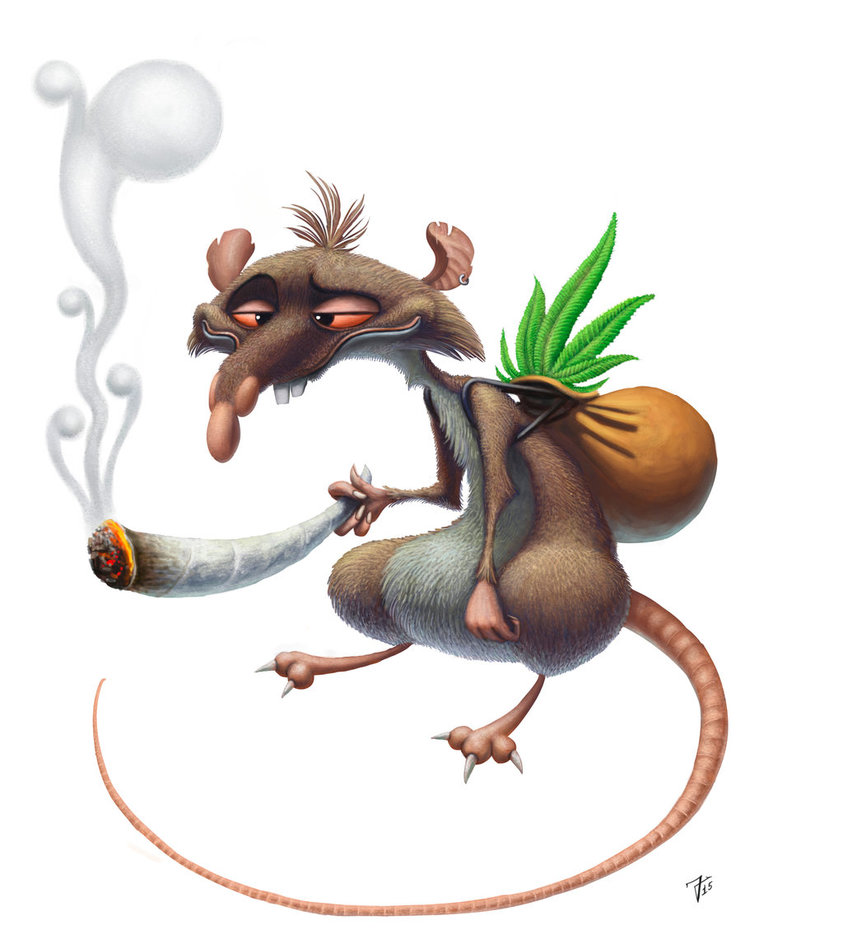

HIT A TOKE!
It's a rats business!
A laboratory rat is a rat of the species Rattus norvegicus (brown rat) which is bred and kept for scientific research. While less commonly used for research than mice, rats have served as an important animal model for research in psychology and biomedical science.

GO BACK
NEXT PAGE
1 2 3 4 5 6 7 8 9 10